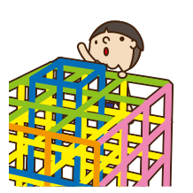
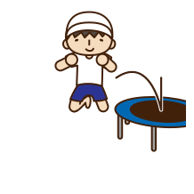
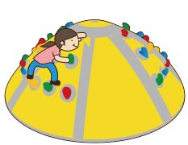

← 作品一覧に戻る

DESIGN WORKS / 01 · 教育サービスサイト
にこすぽ
学校体育事業の一環として展開する教育プログラム「にこすぽ」のWebサイト制作を担当。ヒアリングから提案、デザイン、実装まで一貫して対応しました。
デザインコンセプト
教育サービスとしての楽しさや親しみやすさを表現するため、当時注目されていた動的な演出を取り入れました。サイト内で使用するイラストもすべて描き下ろし、サービス独自の世界観を構築。JavaScriptを使用せず、CSSのみでサイト全体のアニメーションを実装することで、軽量性や保守性にも配慮しています。
担当範囲
- 担当者へのヒアリング
- 情報整理・構成検討
- デザイン提案（複数案作成）
- イラスト制作（Illustratorによる描き下ろし）
- Webデザイン
- HTML/CSSコーディング
- CSSアニメーション実装
- 公開対応
キャラクター・イラスト制作
にこすぽのサイトで使用するキャラクターやイラストも制作しました。制作したキャラクターは、EVERNEWのカタログなど複数の媒体にも展開され、2026年現在も継続して使用されています。


